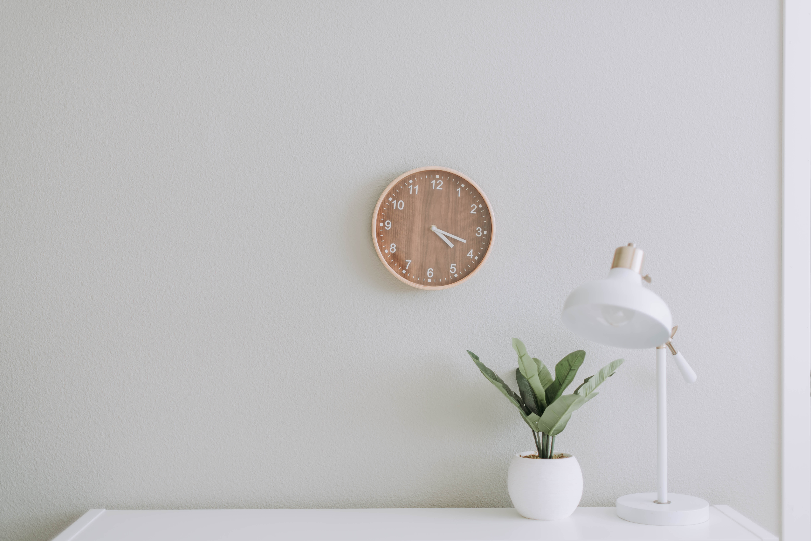

Finding simplicity in life

24 Dec,2022
Life can get complicated really quickly, but it doesn't have to be! There are
many ways to
simplify your life, a few of which we've explored in the past. This week we're taking a bit of a
approach though, in how you can find simplicity in the life you already living
CONTINUE READING
Keeping cooking simple
Food is a very important part of everyone's life. If you want to be healthy,
you have to eat
healthy. One of the easiest ways to do that is to keep your cooking nice and simple.
CONTINUE READING

13 Sep,2022
Simplicity and work
Work is often a major source of stress. People get frustrated, it ruins
their relationship with
others and it leads to burnout. By keeping your work life as simple as possible, it will help
balance everything out.
CONTINUE READING

12 Jan,2022
Simple decorations
A home isn't a home until you've decorated a little. People either don't
decorate, or they go
overboard and it doesn't have the impact they were hoping for. Staying simple will help draw the
eye where you want it to and make things pop like never before
CONTINUE READING

22 Dec,2022